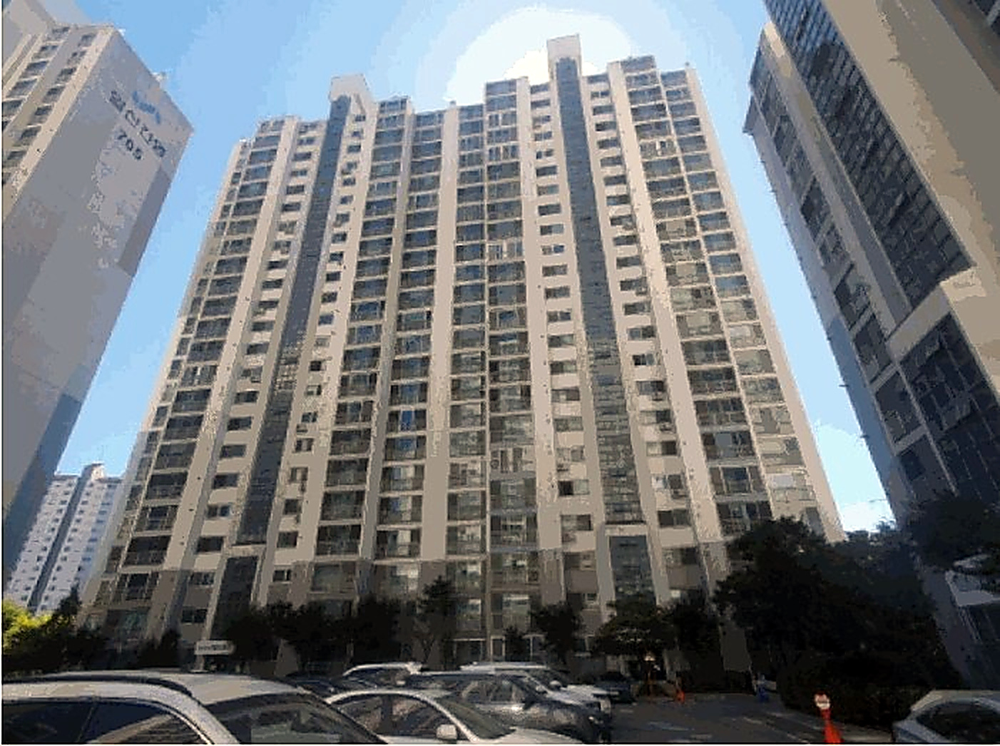
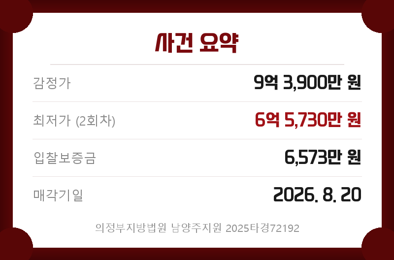
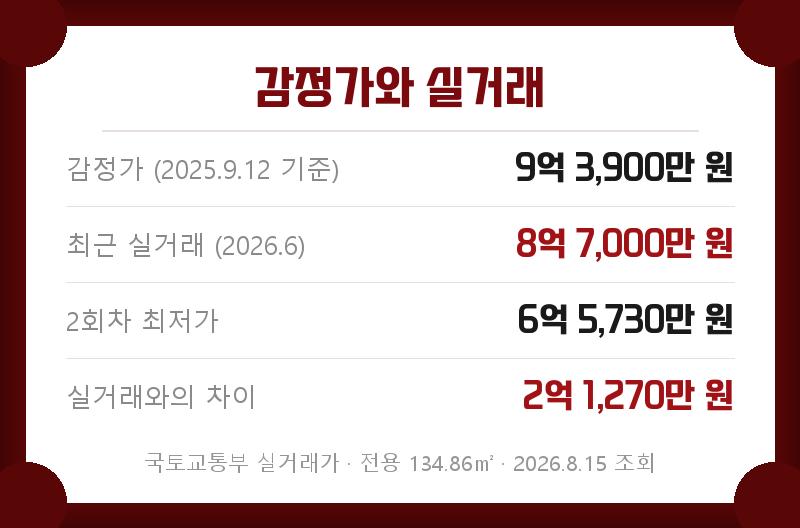
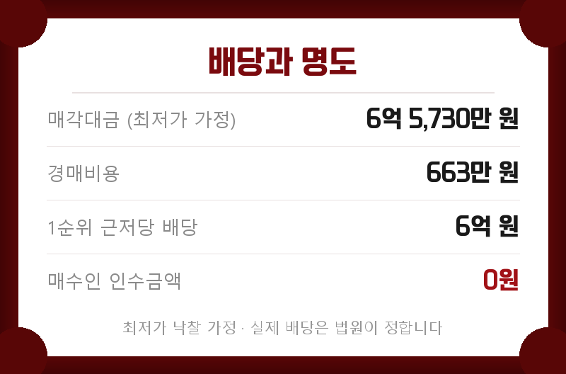
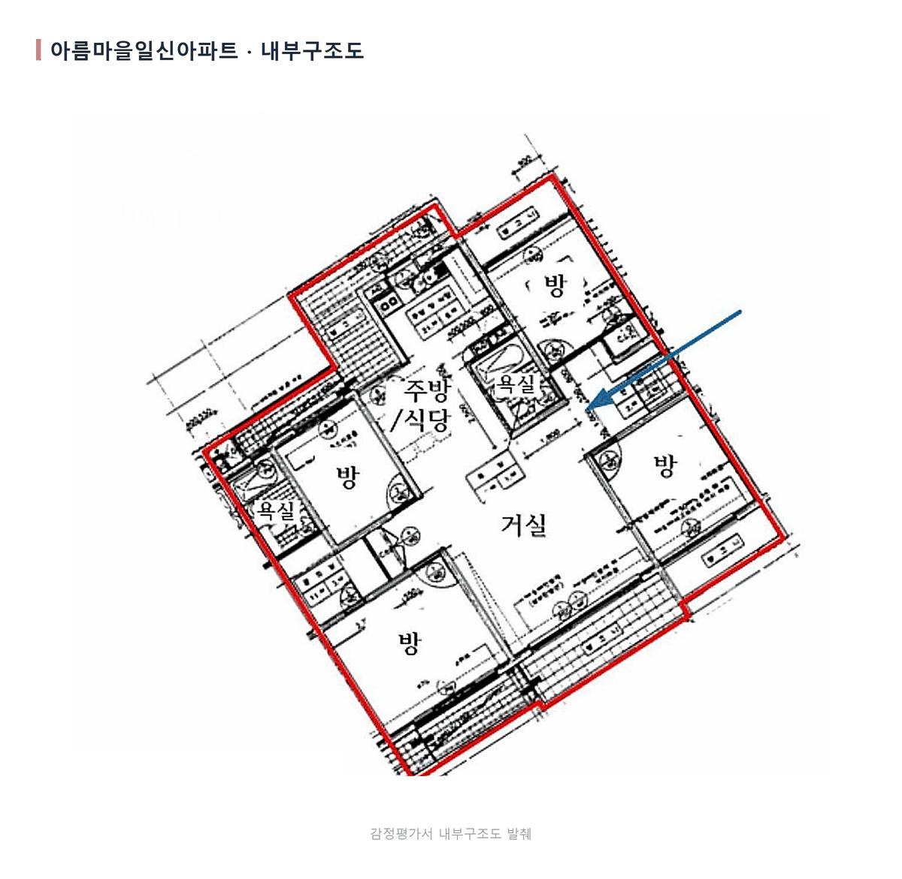
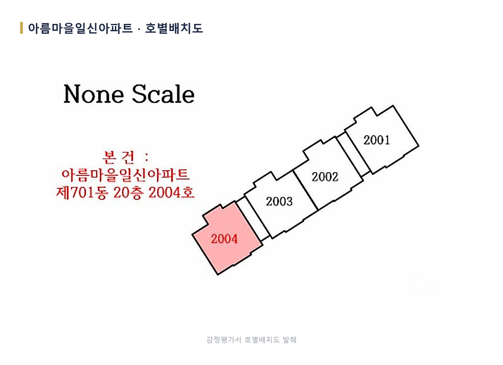
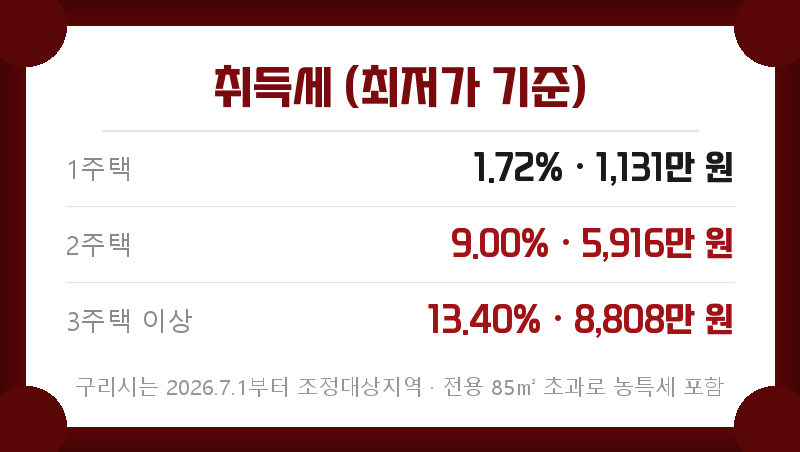
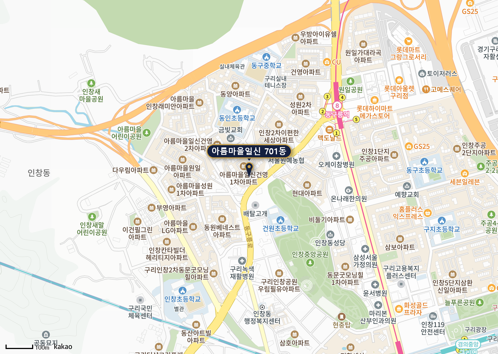

전문가 물건분석

의정부지방법원 남양주지원 2025타경72192
구리시 인창동 아름마을일신건영1차 701동 2004호
전용 134.86㎡ · 약 40.8평
2회차 최저가 6억 5,730만 원

구리시 인창동, 동인초등학교 남측에 있는 아름마을일신건영1차 701동 2004호가 경매로 나왔습니다. 1999년 1월 준공한 5개동 441세대 단지이고 전용 134.86㎡, 약 40.8평입니다.
1차는 감정가 그대로 9억 3,900만 원에 나왔다가 지난 7월 16일 유찰됐습니다. 지금 보시는 6억 5,730만 원이 2회차 최저가로, 감정가의 70% 수준입니다.

입찰보증금 6,573만 · 매각기일 2026년 8월 20일
이 사건 기본 현황입니다
| 관할 | 의정부지방법원 남양주지원 |
|---|---|
| 소재지 | 경기 구리시 인창동 487-32 외 2필지 아름마을일신아파트 701동 2004호 |
| 면적 | 전용 134.86㎡ · 약 40.8평 |
| 준공 | 1999년 1월 · 철근콘크리트 |
| 청구금액 | 508,479,547원 |
| 감정 기준시점 | 2025년 9월 12일 |
현재 시세보다 높게 감정가가 책정됐습니다
이 사건에서 먼저 보셔야 할 것은 감정가입니다. 같은 평형 실거래는 2026년 6월 10일 8억 7,000만 원(6층) 한 건인데, 감정가는 그보다 6,900만 원 높은 9억 3,900만 원입니다. 감정 기준시점이 2025년 9월 12일이라 그 뒤의 시세 변동이 반영되지 않았습니다.
그래서 감정가와의 차이는 실제보다 커 보입니다. 최저가와 비교할 기준은 감정가가 아니라 실거래입니다.

최저가와 실거래의 차이는 2억 1,270만 원
차이 금액이 그대로 수익은 아닙니다.
최저가는 입찰을 시작하는 금액이지 낙찰되는 금액이 아닙니다. 취득세와 명도비, 체납관리비에 경쟁 상황까지 고려해서 적정 입찰가를 산출하셔야 합니다.
전세는 1년 새 내려왔습니다
같은 평형 전세 실거래를 시간순으로 보면 흐름이 보입니다. 2025년 11월 6억 2,000만 원, 2026년 3월 6억 원이던 것이 4월 4억 7,250만 원, 5~6월에는 5억 2,500만~5억 3,000만 원에 계약됐습니다.
월세는 2026년 6월 보증금 2억 원에 월 160만 원, 4월 보증금 5억 원에 월 25만 원 조건이 확인됩니다. 보증금 비중에 따라 월 차임이 크게 달라집니다.
낙찰자가 떠안는 빚은 없습니다
등기부에서 가장 앞선 담보는 2024년 2월 8일 설정된 채권최고액 6억 원의 근저당입니다. 이 근저당이 말소기준권리입니다.
| 2024.02.08 근저당 | 삼성골드대부 6억 원 말소기준 · 소멸 |
|---|---|
| 2025.01.20 근저당 | 행센대부 1억 3,720만 원 · 소멸 |
| 2025.01.20 전세권 | 행센대부 500만 원 · 소멸 |
| 2025.09.05 임의경매 | 고흥군수협 개시결정 · 소멸 |
2025년 1월에 설정된 근저당과 전세권은 모두 말소기준권리보다 뒤라 매각으로 소멸합니다. 등기부상 낙찰자가 인수할 권리는 없습니다.
담보권자가 대부업체 두 곳이라는 점은 짚어둘 만합니다. 은행 담보가 아니라 사금융까지 갔던 사건이라는 뜻입니다.
후순위 근저당·전세권 모두 소멸 · 인수할 권리 없음
점유자는 임차인이 아니라 소유자 가족입니다
집행관이 현장을 방문했으나 폐문부재였고, 전입세대확인서에서 소유자 세대를 확인했습니다. 세대주는 소유자의 아들입니다.
등기부에 전세권이 있지만 그 전세권자는 앞서 본 대부업체이고, 금액도 500만 원입니다. 말소기준권리보다 뒤라 소멸합니다.
대항력 있는 임차인이 있는 사건이 아닙니다.
다만 점유자가 소유자 가족이면 명도는 협의 대상이 다릅니다. 인도명령 대상이지만 이사 일정 협의가 필요하니 기간과 비용은 여유 있게 잡으셔야 합니다.

매수인 인수금액은 0원입니다
방 3개에 욕실 2개, 주방과 식당이 이어진 구조
감정평가서에 실린 내부구조도를 보면 거실을 가운데 두고 방 3개와 욕실 2개가 둘러싼 형태입니다. 주방과 식당이 한 공간으로 이어져 있고, 안방 쪽에 욕실이 따로 붙어 있습니다.

같은 층 배치를 보면 한 층에 네 세대가 있고, 본 물건은 그중 2004호입니다. 계단실을 사이에 두고 2001호부터 2004호까지 이어집니다.

실제로 드는 돈
실제로 드는 돈은 낙찰가에 취득세·명도비·체납관리비를 더한 금액입니다. 여기서 구리시가 올해 7월 1일부터 조정대상지역이자 투기과열지구가 됐다는 점을 꼭 보셔야 합니다. 국토교통부가 6월 30일 구리시 전역을 신규 지정했고, 그때부터 2주택자는 취득세가 9%로 올라갑니다.

2주택 9.00% · 3주택 이상 13.40%
토지거래허가구역이지만, 경매는 허가를 받지 않습니다.
구리시 전역이 2026년 7월 5일부터 2027년 12월 31일까지 토지거래허가구역입니다. 다만 법원 경매로 취득하는 경우는 허가 대상에서 빠지고, 허가에 따라오는 2년 실거주 의무도 붙지 않습니다. 일반 매매로는 못 사는 자리를 경매로는 살 수 있다는 뜻입니다.
대신 취득세 중과와 대출 규제는 그대로 적용됩니다. 규제지역이라 주택담보대출 한도가 지정 전보다 줄었으니, 잔금 계획은 입찰 전에 은행과 맞춰 보셔야 합니다.
1999년 준공, 441세대 단지
1999년 1월 준공한 5개동 441세대 단지입니다. 주차는 총 528대로 세대당 약 1.2대, 난방은 개별난방입니다. 시공은 일신건영입니다.
단지 북쪽으로 동인초등학교가 붙어 있고 노선버스정류소가 가깝습니다. 아파트단지와 근린생활시설이 섞인 주거지역이라 생활 동선이 짧습니다.
동구릉역에서 걸어갈 거리, 초등학교가 바로 옆
경의중앙선 동구릉역이 단지 동쪽에 있고, 동인초등학교와 동구중학교가 바로 붙어 있습니다. 롯데백화점·롯데마트 구리점 상권이 역 건너편이라 생활 편의는 갖춰진 자리입니다.

입찰 날 챙기실 것
입찰보증금 6,573만 원은 수표로 준비하시는 편이 편합니다. 본인이 가시면 신분증과 도장, 대리인이 가시면 인감증명서·위임장·대리인 신분증·도장이 필요합니다.
입찰 전 확인하실 것
- 매각기일 2026년 8월 20일 · 입찰보증금 6,573만 원 준비
- 법원 공고에서 입찰 시각·장소 확인
- 기일 직전 법원 진행상태 재확인
- 보유 주택 수에 따른 취득세율 확정 (1.72% / 9.00% / 13.40%)
- 대출 한도 사전 확인 (조정대상지역·투기과열지구 기준으로 문의)
- 소유자 가족 점유 — 명도 기간과 비용 여유 있게
- 체납관리비 확인 (관리사무소)
- 입찰 직전 최신 실거래 재확인
마지막으로
등기에서 넘어오는 부담이 없고 대항력 있는 임차인도 없는 사건입니다. 대신 감정가가 시세보다 높다는 점과 이 평형 거래가 2년에 한 건이라는 점이 가격 판단을 어렵게 만듭니다.
적정 입찰가는 경쟁 상황과 보유 주택 수, 대출 한도까지 감안해 사건마다 다르게 산출하셔야 합니다.
THE FIN은 2014년부터 경매 현장에 있었고, 법원 매수신청대리인으로 등록된 중개법인입니다. 권리분석·시세조사·입찰 동행·잔금 대출·명도를 단계마다 담당이 나뉜 팀이 함께 진행하고, 사건별 진행 상황을 한 곳에서 관리하고 있습니다.
이 물건으로 입찰을 생각하고 계시면 매각기일 전에 한 번 연락 주십시오. 보유 주택 수와 대출 한도까지 고려해 이 사건에 맞는 적정 입찰가를 함께 산출해 드립니다.
한 번에 정리해 드립니다 · 1668-1090
■ 여기부터는 내부 검토용입니다 — 네이버에 옮기지 마세요
이이사님이 주신 초안과 이 원고가 어디서 갈렸는지 적어 둡니다. 무엇을 고쳤는지 보시고 피드백 주시면 다음 회차에 반영합니다.
- 매매 계약일이 이틀 달랐습니다
초안: 2026년 6월 8일
확인값: 2026년 6월 10일
근거: 국토교통부 실거래 원자료. 금액 8억 7,000만 원은 초안이 맞았습니다. - 전세 건수와 하단이 달랐습니다
초안: 3건 · 5억 2,500만~5억 3,000만 원
확인값: 4건 · 4억 7,250만~5억 3,000만 원
근거: 국토교통부 전월세 실거래. 하단이 5,250만 원 낮아 전세로 자금을 맞출 때 계산이 달라집니다. - 점유자 성격이 달랐습니다
초안: 전입일·보증금이 불명인 임차인
확인값: 소유자 세대와 소유자의 아들이 등재
근거: 현황조사서 원문. 명도가 임차인 협상이 아니라 소유자 가족 협의라 접근이 다릅니다. - 전세권 금액이 빠져 있었습니다
초안: 금액 설명 없음
확인값: 500만 원 · 2025.1.20 설정 · 말소기준보다 후순위라 소멸
근거: 등기사항전부증명서. 금액을 밝히지 않으면 독자가 인수 위험을 과대평가합니다. - 🔴규제지역 판정이 틀렸습니다 — 저희 잘못입니다
초안: 구리시는 비규제지역 (저희가 1차로 그렇게 적었습니다)
확인값: 2026년 7월 1일부터 조정대상지역·투기과열지구
근거: 국토교통부 2026년 6월 30일 신규 지정. 저희 정책 정본이 6월 7일 검증본이라 그 지정을 몰랐고, 그 결과 2주택 취득세를 1.72%로 잘못 적었습니다(정정: 9.00%). 대표님이 잡아 주셨습니다. - 경매는 토지거래허가 대상이 아닙니다
초안: —
확인값: 허가 불요 · 2년 실거주 의무도 붙지 않음
근거: 구리시 전역이 토지거래허가구역이지만 법원 경매 취득은 허가 대상에서 빠집니다. 규제를 위험으로만 쓰면 이 사건의 강점을 놓칩니다.